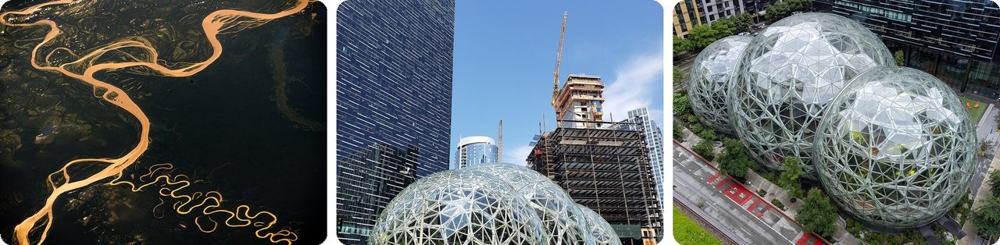
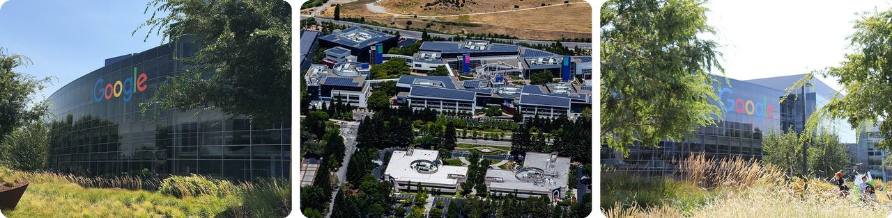
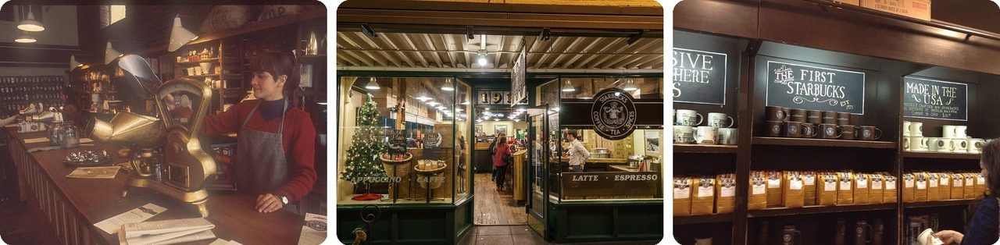
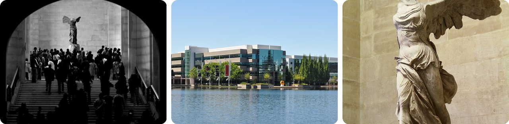
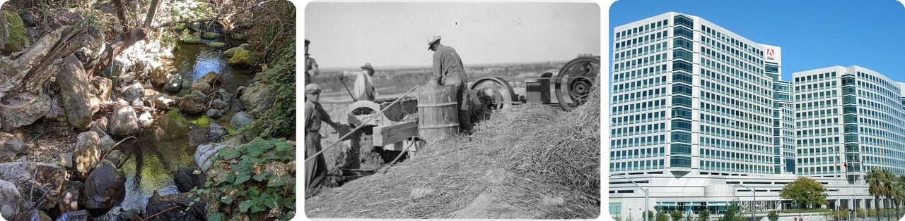
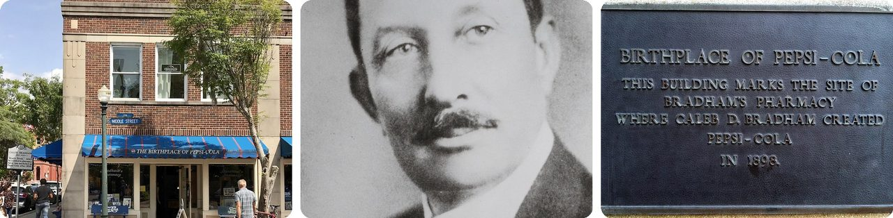
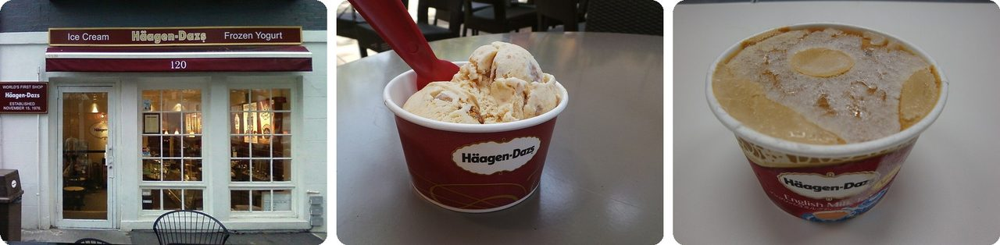
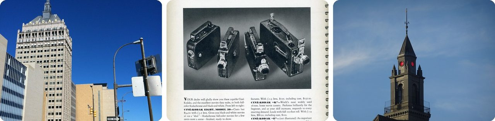
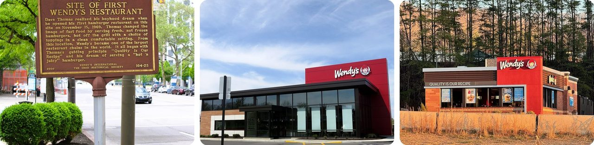
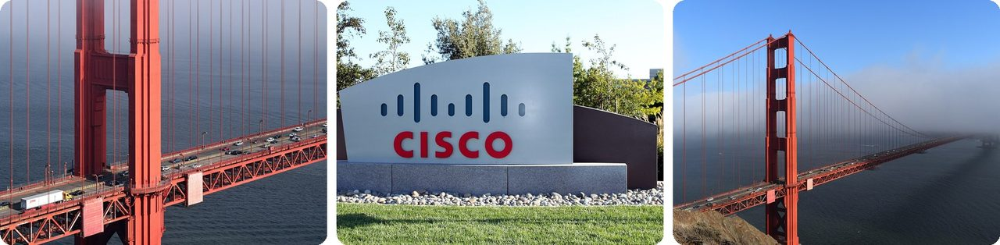

🌍 Top 10 Surprising Origins of Famous US Company Names
Nov 8, 2026
1. 📦 Amazon was first called Cadabra, until a lawyer heard "cadaver"

Jeff Bezos started his online bookstore in July 1994 in Bellevue, Washington, and named it Cadabra, which sounds a lot like the magic word "abracadabra."Then a lawyer misheard the name as "cadaver," which means a dead body. Not a great look for a store. So after just a few months, Bezos flipped through the dictionary for something better.
He picked Amazon, the world's largest river, because it sounded "exotic and different," just like the company he imagined.
In other words, the biggest store online almost had a name that sounded like a dead body.
2. 🔢 Google is a misspelling of a giant number

Before it was Google, Larry Page and Sergey Brin's search project at Stanford University had a funnier name: BackRub. It started in 1996.When they renamed it, they reached for "googol," the number 1 followed by 100 zeros. The idea was that their search engine would dig through a huge number of websites. But the name came out spelled "Google," and it stuck.
Even the company's headquarters got in on the joke. It's called the Googleplex, a play on "googolplex," an even bigger number.
Basically, one of the most famous words on Earth is a typo of a math word.
3. ☕ Starbucks almost had nothing to do with Moby-Dick

Starbucks opened in 1971 at Seattle's Pike Place Market, and for its first ten years it only sold coffee beans and coffee gear, not drinks.The founders were hunting for a name. A business partner thought words starting with "st" sounded powerful, so they made a list. They landed on "Starbo," a misreading of Storbo, an old mining town in the nearby Cascade mountains. That reminded them of Starbuck, the chief mate on the ship in the novel Moby-Dick.
One founder later said the book "didn't have anything to do with Starbucks directly." They just liked how it sounded.
Think of it as a name picked for its sound, with a famous book along for the ride.
4. 👟 Nike is named after a Greek goddess, and its Swoosh cost $35

Nike started in Oregon in 1964 as Blue Ribbon Sports, selling running shoes made in Japan. When it launched its own shoes in 1971, a runner on the team, Jeff Johnson, suggested a new name: Nike, the Greek goddess of victory.The famous Swoosh logo was drawn by Carolyn Davidson, a design student at Portland State University. She was paid $2 an hour and got $35 for about 17 and a half hours of work. That's about $278 in today's money.
Twelve years later, the founder thanked her with a gold Swoosh ring with a diamond and 500 shares of Nike stock.
It's like getting paid lunch money to draw one of the most famous shapes in the world.
5. 🏞️ Adobe is named after the creek behind its founder's house

Adobe, the company behind Photoshop and PDF files, started in 1982 in John Warnock's garage in Los Altos, California.A little stream, Adobe Creek, ran behind his house, so that became the name. And the creek itself was named after the clay found there: adobe is the Spanish word for a mud brick.
That same year, Steve Jobs offered $5 million to buy the brand-new company. The founders said no.
So one of the biggest software companies is, in a way, named after mud.
6. 🥤 Pepsi got its name from an upset stomach

In 1893, a pharmacist named Caleb Bradham mixed up a fountain drink at his drugstore in New Bern, North Carolina. He called it "Brad's Drink."He wanted it to help with digestion and give people energy. So in 1898 he renamed it Pepsi-Cola, from "dyspepsia" (an old word for indigestion) and "pepsin" (a stomach enzyme that helps break down food). The first ads even called it "The Pepsin Drink."
The drink outgrew his shop: in 1903 he moved the bottling out of the drugstore into a rented building nearby.
Basically, Pepsi started out as a tummy medicine with bubbles.
7. 🍦 Häagen-Dazs is a made-up name from the Bronx

It sounds like it comes from Scandinavia, but Häagen-Dazs was started in New York City's Bronx around 1960 by Reuben and Rose Mattus, a Polish-American couple.Reuben invented a name that he thought sounded Danish. He meant it as a thank-you to Denmark for how it protected Jewish people during World War II. Here's the twist: the letter "ä" and the letter pair "zs" don't even exist in Danish.
To make the ice cream feel fancy, Rose dressed up in elegant clothes to hand out free samples.
It's a fake foreign accent, but for ice cream.
8. 📷 Kodak is a word George Eastman invented because he loved the letter K

"Kodak" doesn't mean anything. George Eastman made it up and trademarked it in 1888 for his company in Rochester, New York.He had three rules: the name had to be short, easy to say, and not like any other word. And he wanted K in it, because he said K "seems a strong, incisive sort of letter," meaning sharp and punchy.
So he built a word that starts and ends with his favorite letter.
Think of it as a word built from scratch, like a brand-new password.
9. 🍔 Wendy's is named after a girl whose real name is Melinda

Dave Thomas opened the first Wendy's in Columbus, Ohio, in 1969. He named it after his fourth child, Melinda Lou, who was eight years old.So why "Wendy"? Her brothers and sisters couldn't say "Melinda," so they called her "Wenda," which turned into "Wendy." Her face, a freckled girl with red braids, became the logo too.
Thomas later wrote that he regretted it. Once the chain got huge, his daughter lost some of her privacy, and lots of people assumed she was the company's official spokesperson.
In other words, a kid's nickname from her siblings is now on thousands of restaurants.
10. 🌉 Cisco is just the end of "San Francisco"

Cisco, which makes the equipment that connects computers and the internet, was started in December 1984 by Leonard Bosack and Sandy Lerner, a married couple who ran computers at Stanford University.They took the name from the nearby city, San Francisco. In the early years, the company's engineers insisted on writing it in lowercase, "cisco."
Its logo, those rows of thin lines, is a simple drawing of the two towers of the Golden Gate Bridge.
It's like naming your company "York" because you live in New York.
Fun fact
In 1971, Nike co-founder Bill Bowerman wanted a running shoe sole that would grip the track but stay light. Over breakfast, he poured rubber into his wife's waffle iron to test the idea. The shoe that came out of it in 1972 was called the "Moon Shoe," because its waffle pattern looked like the footprints astronauts left on the Moon. It's one of many inventions that started with an ordinary kitchen gadget.
Photo credits (Wikimedia Commons)
- #1: Amazon River - 2018.jpg by Alexander Gerst, CC BY-SA 2.0
- #1: Amazon Spheres 2018.jpg by Andy Li, CC0
- #1: Amazon spheres W.jpg by Sea Cow, CC BY-SA 4.0
- #2: Googleplex HQ (cropped).jpg by Asoundd, CC BY-SA 4.0
- #2: Google Campus, Mountain View, CA.jpg by Austin McKinley, CC BY 3.0
- #2: Outside Googleplex in Mountain View, California.jpg by David Nagle, CC BY-SA 4.0
- #3: Pike Place Market - Starbucks circa 1977.jpg by Pike Place Market. See File talk:Pike Place Market - Starbucks circa 1977.jpg for further discussion., CC BY 2.0
- #3: Starbucks Seattle PikePlace 1912.jpg by SilentDeath, CC BY-SA 4.0
- #3: Original Starbucks mugs.jpg by Kingofthedead, CC BY-SA 4.0
- #4: Winged Victory of Samothrace (flickr) by AlphaTangoBravo / Adam Baker, CC BY 2.0
- #4: Nike Headquarters Oregon.jpg by Carson, Brandon, CC BY 2.0
- #4: Winged Victory of Samothrace (1).jpg by Rijin, CC BY-SA 4.0
- #5: Adobe Creek below O'Keefe Lane.jpg by Dicklyon, CC BY-SA 4.0
- #5: Mixing materials to make adobe bricks - NARA - 286041.jpg by Unknown authorUnknown author or not provided, Public domain
- #5: Adobe World Headquarters.jpg by Coolcaesar, CC BY-SA 4.0
- #6: Bradham’s Pharmacy.jpg by Indy beetle, CC0
- #6: Caleb Davis Bradham.jpg by Unknown authorUnknown author, Public domain
- #6: PepsiPlaque.jpg by RadioFan, CC BY-SA 3.0
- #7: Häagen-Dazs' first shop.jpg by Fuhghettaboutit, CC BY-SA 3.0
- #7: Häagen-Dazs .jpg by Gtx5841, CC BY-SA 4.0
- #7: Häagen-Dazs English Milk Tea Ice Cream (4008328936).jpg by David Pursehouse from Kawasaki, Japan, CC BY 2.0
- #8: Kodak Tower Morrie Silver Way.JPG by Larry, CC BY-SA 3.0
- #8: Cine- Kodak Cameras 1937 (flickr) by Nesster, CC BY 2.0
- #8: Kodak Tower spire detail (Rochester NY).jpg by B137, CC BY-SA 4.0
- #9: First Wendy's historical marker 01.jpg by Farragutful, CC BY-SA 4.0
- #9: Wendy's flagship restaurant (Dublin, Ohio).jpg by Nheyob, CC BY-SA 4.0
- #9: A Wendy's restaurant in Blairsville, Georgia.jpg by Harrison Keely, CC BY 4.0
- #10: Golden Gate Bridge, north tower detail.jpg by Radomianin, CC BY-SA 4.0
- #10: Signage - Cisco San Jose Main Campus.jpg by Prayitno, CC BY 2.0
- #10: Golden Gate Bridge, North view.jpg by Radomianin, CC BY-SA 4.0


.jpg){kind=link}


.jpg){kind=link}


.jpg){kind=link}

.jpg){kind=link}

.jpg){kind=link}